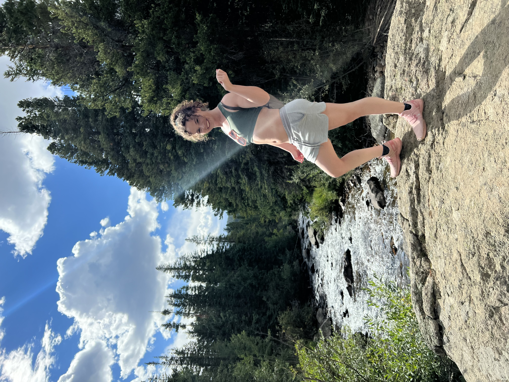

Profile-Margot

About Me
- Born in Larned, Kansas
- Now residing in Lakewood, CO
- Something you would never guess about me is that I have performed for WWE before.
- My biggest Bucket List Wish is to travel across the United States in a Campervan while hiking in every state.

Interests
- I love Hiking. (If you click the Image above, you will be re-directed to the Rocky Mountain National Park Page where you can plan your own adventure).
- This song is not only, arguably, the Greates song ever, but made for an amazing movie!
- I enjoy the benefits of Yoga